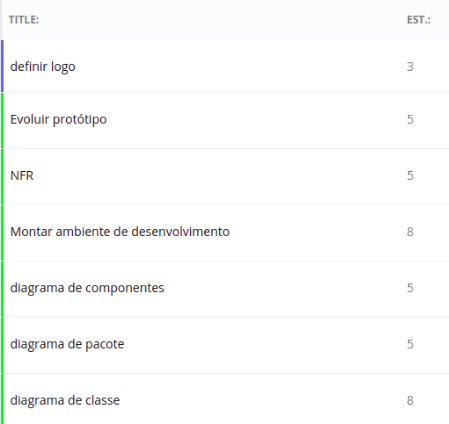
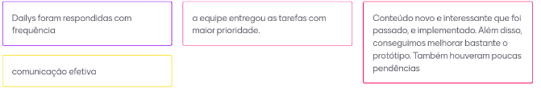
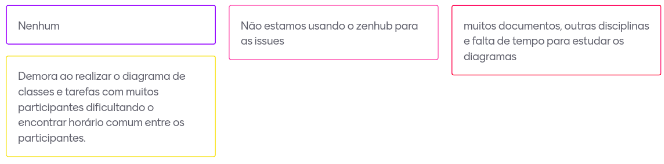

Sprint 4
Sprint 4 (15/09/20 à 21/09/20)
Sprint Planning
Presentes na reunião: Todos
Sprint Backlog
| Tarefa | Responsabilidade |
|---|---|
| Diagrama de classe | Todos |
| Diagrama de pacote | Moacir, Matheus e Lucas |
| Diagrama de componentes | João, Renan e Matheus |
| Montar ambiente de desenvolvimento | João, Matheus e Renan |
| NFR | Lucas e Moacir |
| Evoluir protótipo | Moacir, Lucas e Renan |
| Definir logo | Todos |
Pontuação das tarefas

Sprint Retrospective/Review Meeting
Presentes na reunião: Todos
Dividas da sprint
- Definir logo
- Montar ambiente de desenvolvimento
Riscos Encontrados
- R12
- R13
- R15
Pontos Positivos

Pontos Negativos

O que podemos melhorar?
- Usar mais o zenhub
- Tentar reduzir a dependência entre os membros
- Estudar melhor
Ferramentas utilizadas
- Reunião: Hangouts
- Colheita dos pontos: Mentimeter
- Pontuar tarefas: planitpoker